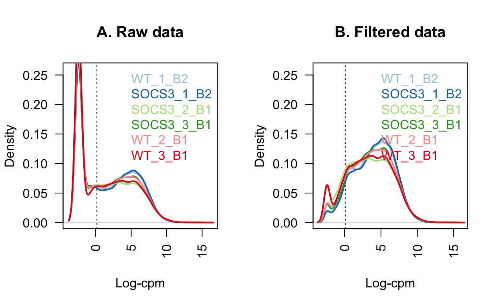
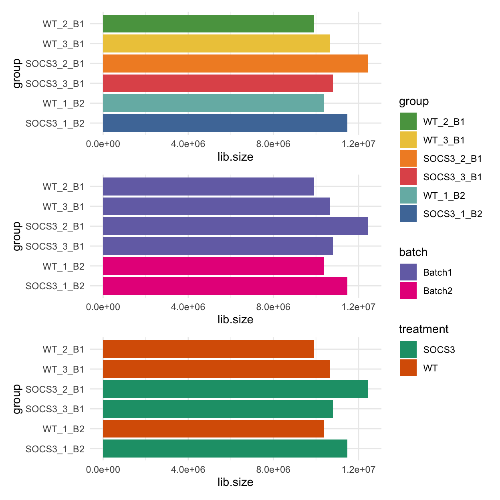
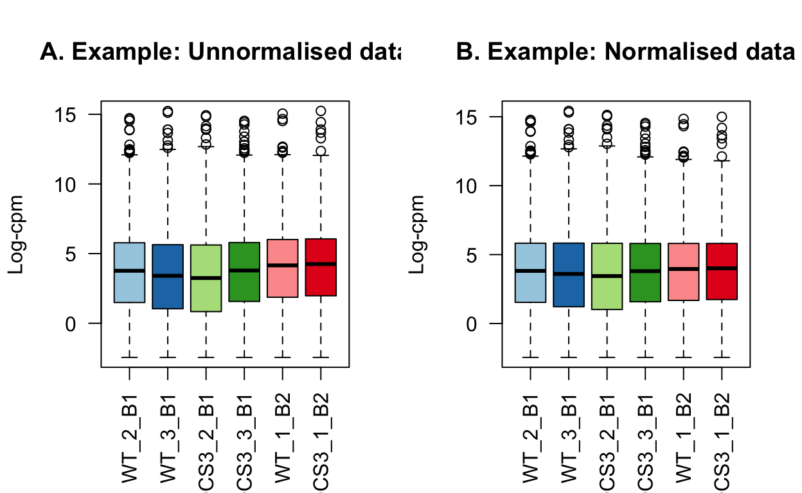
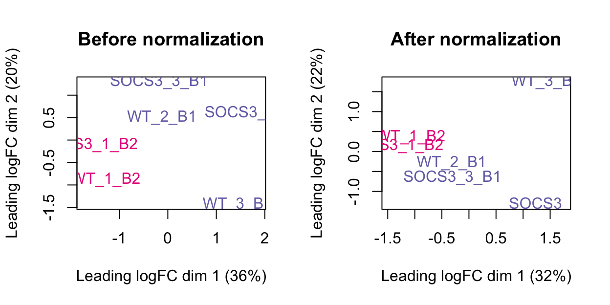
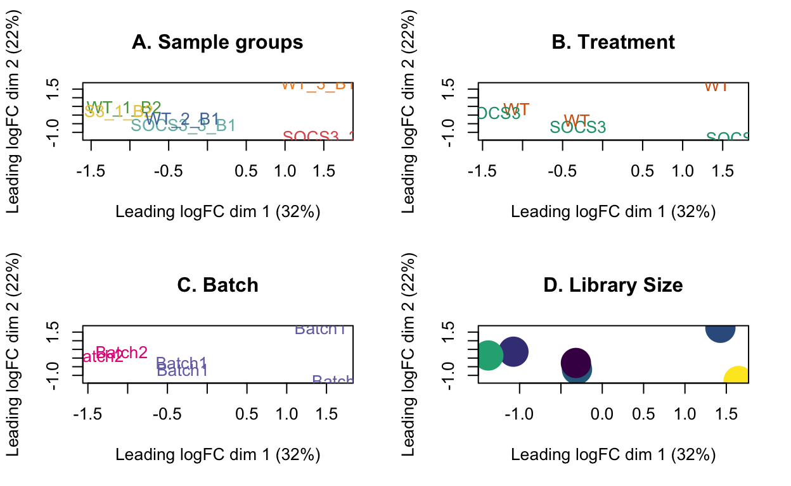
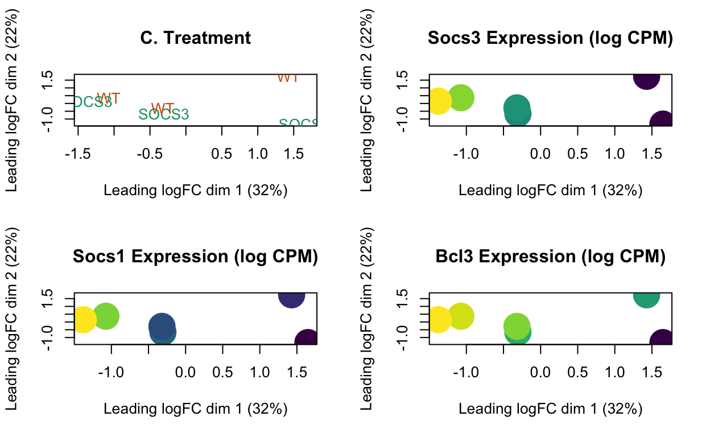
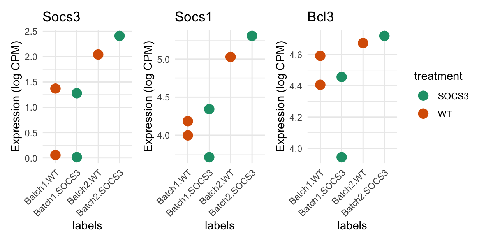

This analysis is based on the guide “RNA-seq analysis is easy as 1-2-3 with limma, Glimma and edgeR” (Law et al. 2018), see https://pmc.ncbi.nlm.nih.gov/articles/PMC4937821/.
# Read in data
counts <- read.csv(here("data/old_counts/filtered_output_3_combined_counts.csv"), header=TRUE)
rownames(counts) <- counts$gene
counts <- counts[, -1]
# Remove everything before the full stop
colnames(counts) <- factor(gsub("filtered_output2_|260_|985_|Tube._", "", colnames(counts)))
group <- factor(colnames(counts))
dge <- DGEList(counts)
class(dge)[1] "DGEList"
attr(,"package")
[1] "edgeR"# Better to get the batch from the colnames also
batch <- gsub(".+_", "", group)
batch <- factor(gsub("B", "Batch", batch))
# Replace uppercase with lowercase
group <- factor(group)
# Treatment labels SOCS3 or WT
treatment <- factor(gsub("_.+", "", group))
# Put sample information info DGEList object
dge$samples$group <- group
dge$samples$batch <- batch
dge$samples$treatment <- treatment
# Check that everything is consistent here
table(group, treatment) treatment
group SOCS3 WT
SOCS3_1_B2 1 0
SOCS3_2_B1 1 0
SOCS3_3_B1 1 0
WT_1_B2 0 1
WT_2_B1 0 1
WT_3_B1 0 1table(group, batch) batch
group Batch1 Batch2
SOCS3_1_B2 0 1
SOCS3_2_B1 1 0
SOCS3_3_B1 1 0
WT_1_B2 0 1
WT_2_B1 1 0
WT_3_B1 1 0dge$samples group lib.size norm.factors batch treatment
WT_1_B2 WT_1_B2 10384129 1 Batch2 WT
SOCS3_1_B2 SOCS3_1_B2 11483449 1 Batch2 SOCS3
SOCS3_2_B1 SOCS3_2_B1 12461036 1 Batch1 SOCS3
SOCS3_3_B1 SOCS3_3_B1 10799372 1 Batch1 SOCS3
WT_2_B1 WT_2_B1 9901505 1 Batch1 WT
WT_3_B1 WT_3_B1 10645117 1 Batch1 WT# Remove group, treatment and batch. These should only be accessed from dge!!!
rm(group, batch, treatment)geneid <- rownames(dge)
# We have Ensembl ID's
gene_map <- AnnotationDbi::select(Mus.musculus, keys=geneid, columns=c("SYMBOL", "TXCHROM"),
keytype="ENSEMBL")
# Investigate duplicate gene IDs
# There are 63 duplicate IDs, for these use their Ensembl ID ... or just remove them?
# Code to remove them:
table(duplicated(gene_map$ENSEMBL))
FALSE TRUE
21700 299 gene_map$SYMBOL[duplicated(gene_map$ENSEMBL)] <- gene_map$ENSEMBL[duplicated(gene_map$ENSEMBL)]
# For NA symbols, use the ensembl gene id
gene_map$SYMBOL <- ifelse(is.na(gene_map$SYMBOL), gene_map$ENSEMBL, gene_map$SYMBOL)
dge$genes <- gene_map[match(rownames(dge), gene_map$ENSEMBL), ]
head(dge$genes) ENSEMBL SYMBOL TXCHROM
1 ENSMUSG00000000001 Gnai3 chr3
2 ENSMUSG00000000003 Pbsn chrX
3 ENSMUSG00000000028 Cdc45 chr16
4 ENSMUSG00000000037 Scml2 chrX
5 ENSMUSG00000000049 Apoh chr11
6 ENSMUSG00000000056 Narf chr11
0 1 2 3 4 5 6
12129 1119 896 868 1035 1452 4201 [1] 0keep.exprs <- filterByExpr(dge, group=dge$samples$group)
dge <- dge[keep.exprs,, keep.lib.sizes=FALSE]
dim(dge)[1] 13579 6# We have removed 140 genes using filterByExpr.
# This function keeps genes with about 10 read counts or more in a minimum
# number of samples.
sum(keep.exprs == FALSE)[1] 8121# rowSums(dge$counts == 0)In the raw data, there is a spike of lowly expressed genes.
These are removed using the filterByExpr function.
# Figure 1: Density of the raw post filtered data
# M is the mean, L is the median
L <- mean(dge$samples$lib.size) * 1e-6
M <- median(dge$samples$lib.size) * 1e-6
c(L, M)[1] 10.94030 10.71752lcpm.cutoff <- log2(10/M + 2/L)
nsamples <- ncol(dge)
col <- brewer.pal(nsamples, "Paired")
par(mfrow=c(1,2))
plot(density(lcpm[,1]), col=col[1], lwd=2, ylim=c(0,0.26), las=2, main="", xlab="")
title(main="A. Raw data", xlab="Log-cpm")
abline(v=lcpm.cutoff, lty=3)
for (i in 2:nsamples){
den <- density(lcpm[,i])
lines(den$x, den$y, col=col[i], lwd=2)
}
legend("topright", as.character(dge$samples$group), text.col=col, bty="n")
lcpm <- edgeR::cpm(dge, log=TRUE)
plot(density(lcpm[,1]), col=col[1], lwd=2, ylim=c(0,0.26), las=2, main="", xlab="")
title(main="B. Filtered data", xlab="Log-cpm")
abline(v=lcpm.cutoff, lty=3)
for (i in 2:nsamples){
den <- density(lcpm[,i])
lines(den$x, den$y, col=col[i], lwd=2)
}
legend("topright", as.character(dge$samples$group), text.col=col, bty="n")
# Set colours for this data set
group_colours <- setNames(
ggthemes::tableau_color_pal("Tableau 10")(6),
levels(dge$samples$group))
batch_colours <- setNames(
brewer.pal(8, "Dark2")[3:4],
levels(dge$samples$batch))
treatment_colours <- setNames(
brewer.pal(8, "Dark2")[1:2],
levels(dge$samples$treatment))The barcharts below show the library sizes for each sample, coloured by sample, batch and treatment.
# this factor ordering for group is helpful for QC, as it puts everything from
# the same batch next to each other.
dge$samples$group <- factor(dge$samples$group,
levels = c("WT_2_B1", "WT_3_B1", "SOCS3_2_B1", "SOCS3_3_B1", "WT_1_B2", "SOCS3_1_B2"))
p1 <- ggplot(data = dge$samples, mapping = aes(y = group, x = lib.size, fill = group)) +
geom_col() +
scale_fill_manual(values = group_colours) +
scale_y_discrete(limits = rev(levels(dge$samples$group))) +
theme_minimal()
p2 <- ggplot(data = dge$samples, mapping = aes(y = group, x = lib.size, fill = batch)) +
geom_col() +
scale_fill_manual(values = batch_colours) +
scale_y_discrete(limits = rev(levels(dge$samples$group))) +
theme_minimal()
p3 <- ggplot(data = dge$samples, mapping = aes(y = group, x = lib.size, fill = treatment)) +
geom_col() +
scale_fill_manual(values = treatment_colours) +
scale_y_discrete(limits = rev(levels(dge$samples$group))) +
theme_minimal()
(p1 / p2 / p3) + plot_layout(guides = "collect")
Expressed features are defined as those with at least one count in a sample. There is a similar number of expressed features in each sample. Note however that 13,000 is quite low and the usual amount would be closer to 20,000 genes.
dge$samples$nFeatures <- apply(dge$counts, MARGIN = 2, FUN = function(x) {sum(x > 0)})
dge$samples |>
dplyr::select(group, nFeatures) |>
knitr::kable()| group | nFeatures | |
|---|---|---|
| WT_1_B2 | WT_1_B2 | 13358 |
| SOCS3_1_B2 | SOCS3_1_B2 | 13368 |
| SOCS3_2_B1 | SOCS3_2_B1 | 12831 |
| SOCS3_3_B1 | SOCS3_3_B1 | 13213 |
| WT_2_B1 | WT_2_B1 | 13193 |
| WT_3_B1 | WT_3_B1 | 12746 |
There are no mitochondrial genes in this count matrix.
table(dge$genes$TXCHROM)
chr1 chr10 chr11
836 644 1145
chr12 chr13 chr14
462 436 420
chr15 chr16 chr17
559 399 663
chr18 chr19 chr2
343 512 1054
chr3 chr4 chr4_JH584294_random
578 902 1
chr5 chr6 chr7
815 755 1043
chr8 chr9 chrX
632 758 333 The impact of normalisation is subtle. Most notably, the third quantiles have been brought into alignment.
dge_raw <- dge
dge <- calcNormFactors(dge, method = "TMM")
# Library sizes
dge_raw$samples$lib.size[1] 10377317 11475960 12456805 10793544 9896663 10641492# Norm factors
dge_raw$samples$norm.factors[1] 1 1 1 1 1 1dge$samples$norm.factors[1] 1.1514177 1.1882010 0.8713582 0.9910832 0.9664706 0.8757532# log-cpm in appropriate order for plot
# NOTE: NEVER USE WITH dge$samples!!! For plotting only!!
lcpm_raw_plot <- edgeR::cpm(dge_raw, log=TRUE)[, levels(dge_raw$samples$group)]
lcpm_plot <- edgeR::cpm(dge, log = TRUE)[, levels(dge$samples$group)]
# y-limit for plot
ylims <- range(c(lcpm_raw_plot, lcpm_plot))
par(mfrow=c(1,2))
boxplot(lcpm_raw_plot, las=2, col=col, main="", )
title(main="A. Example: Unnormalised data", ylab="Log-cpm")
boxplot(lcpm_plot, las=2, col=col, main="")
title(main="B. Example: Normalised data", ylab="Log-cpm")
The plots below show the MDS plot before and after normalisation. This has a more obvious difference than the boxplot above.
par(mfrow = c(1,2))
plotMDS(dge_raw, main="Before normalization", col=batch_colours[dge_raw$samples$batch])
plotMDS(dge, main="After normalization", col=batch_colours[dge$samples$batch])
After normalising the data, we need to evaluate the log counts again.
lcpm <- edgeR::cpm(dge, log=TRUE)A useful tool to visualise RNA-seq data is the multi-dimensional scaling (MDS) plot. This plot can show us which samples are more similar to each other, and can help to identify outlying or low quality samples. The first dimension captures the most amount of information about the data, while the second dimension captures the next biggest proportion of variation.
Things to look out for in this plot are: - Samples should cluster within the primary condition of interest, i.e., treatment. - Technical replicates should lie very close to each other. - The first dimension should explain treatment, and the second should explain batch.
The MDS plot below shows that the first dimension can be explained by batch (32% variation). The second dimension shows some separation by treatment and library size.
As the technical replicates have not clustered together, we cannot get DE for this data.
# NOTE: Even though it might seem like more typing, it is much better to use
# dge$samples$group than group.
# It is very easy to have inconsistencies with labelling if not using the dge
# object every time.
par(mfrow = c(2,2))
plotMDS(lcpm, labels=dge$samples$group, col=group_colours[dge$samples$group])
title(main="A. Sample groups")
plotMDS(lcpm, labels=dge$samples$treatment, col=treatment_colours[dge$samples$treatment])
title(main="B. Treatment")
plotMDS(lcpm, labels=dge$samples$batch, col=batch_colours[dge$samples$batch])
title(main="C. Batch")
# MDS plot with library size
libsizes <- dge$samples$lib.size
# Create a viridis color function
color_func <- scales::col_numeric(viridis::viridis(100), domain = range(libsizes))
# Assign colors according to library sizes
point_colors <- color_func(libsizes)
plotMDS(lcpm, labels=NULL, pch = 16, cex = 4, col=point_colors)
title(main="D. Library Size") 
Plots showing genes of interest on MDS plot.
par(mfrow = c(2,2))
# Plot 3: Treatments
plotMDS(lcpm, labels=dge$samples$treatment, col=treatment_colours[dge$samples$treatment])
title(main="C. Treatment")
genes_of_interest <- c("Socs3", "Socs1", "Bcl3")
# Plot 5: Socs gene.
gene_name <- genes_of_interest[1]
gene_expression <- lcpm[grep(gene_name, dge$genes$SYMBOL), ]
# Create a viridis color function
color_func <- scales::col_numeric(viridis::viridis(100), domain = range(gene_expression))
# Assign colors according to library sizes
point_colors <- color_func(gene_expression)
plotMDS(lcpm, labels=NULL, pch = 16, cex = 4, col=point_colors)
title(main=paste0(gene_name, " Expression (log CPM)"))
gene_name <- genes_of_interest[2]
gene_expression <- lcpm[grep(gene_name, dge$genes$SYMBOL), ]
# Create a viridis color function
color_func <- scales::col_numeric(viridis::viridis(100), domain = range(gene_expression))
# Assign colors according to library sizes
point_colors <- color_func(gene_expression)
plotMDS(lcpm, labels=NULL, pch = 16, cex = 4, col=point_colors)
title(main=paste0(gene_name, " Expression (log CPM)"))
gene_name <- genes_of_interest[3]
gene_expression <- lcpm[grep(gene_name, dge$genes$SYMBOL), ]
# Create a viridis color function
color_func <- scales::col_numeric(viridis::viridis(100), domain = range(gene_expression))
# Assign colors according to library sizes
point_colors <- color_func(gene_expression)
plotMDS(lcpm, labels=NULL, pch = 16, cex = 4, col=point_colors)
title(main=paste0(gene_name, " Expression (log CPM)")) 
Based on a priori knowledge, the SOCS3 knockout samples should express Socs1 and Socs3 less than the WT. Bcl3 should be higher in the SOCS3 group.
genes_of_interest <- c("Socs3", "Socs1", "Bcl3")
selected_genes <- match(genes_of_interest, dge$genes$SYMBOL)
df <- data.frame(
y = t(lcpm[selected_genes, ]),
treatment = dge$samples$treatment,
batch = dge$samples$batch)
colnames(df)[1:3] <- genes_of_interest
df$labels <- factor(paste0(df$batch, ".", df$treatment),
levels = c("Batch1.WT", "Batch1.SOCS3", "Batch2.WT", "Batch2.SOCS3"))
treatment_colours <- setNames(
RColorBrewer::brewer.pal(3, "Dark2")[1:2],
levels(dge$samples$treatment))
plot_list <- list()
for (i in 1:3) {
plot_list[[i]] <-
ggplot(data = df, mapping = aes(x = labels, y = .data[[genes_of_interest[i]]], group = labels, colour = treatment)) +
geom_point(size = 4) +
theme_minimal() +
theme(axis.text.x = element_text(angle = 45, hjust = 1)) +
ylab("Expression (log CPM)") +
scale_colour_manual(values = treatment_colours) +
ggtitle(label = paste0(genes_of_interest[i])
)
}
patchwork::wrap_plots(plot_list, ncol = 3, guides = "collect") 
design <- model.matrix(~0+treatment+batch, data = dge$samples)
colnames(design) <- gsub("treatment", "", colnames(design))
design SOCS3 WT batchBatch2
WT_1_B2 0 1 1
SOCS3_1_B2 1 0 1
SOCS3_2_B1 1 0 0
SOCS3_3_B1 1 0 0
WT_2_B1 0 1 0
WT_3_B1 0 1 0
attr(,"assign")
[1] 1 1 2
attr(,"contrasts")
attr(,"contrasts")$treatment
[1] "contr.treatment"
attr(,"contrasts")$batch
[1] "contr.treatment"contr.matrix <- makeContrasts(
SOCS3vsWT = SOCS3 - WT,
levels = colnames(design))
contr.matrix Contrasts
Levels SOCS3vsWT
SOCS3 1
WT -1
batchBatch2 0v <- voom(dge, design, plot=TRUE)vAn object of class "EList"
$genes
ENSEMBL SYMBOL TXCHROM
1 ENSMUSG00000000001 Gnai3 chr3
3 ENSMUSG00000000028 Cdc45 chr16
4 ENSMUSG00000000037 Scml2 chrX
5 ENSMUSG00000000049 Apoh chr11
7 ENSMUSG00000000058 Cav2 chr6
13574 more rows ...
$targets
group lib.size norm.factors batch treatment
WT_1_B2 WT_1_B2 11948626 1.1514177 Batch2 WT
SOCS3_1_B2 SOCS3_1_B2 13635747 1.1882010 Batch2 SOCS3
SOCS3_2_B1 SOCS3_2_B1 10854339 0.8713582 Batch1 SOCS3
SOCS3_3_B1 SOCS3_3_B1 10697300 0.9910832 Batch1 SOCS3
WT_2_B1 WT_2_B1 9564834 0.9664706 Batch1 WT
WT_3_B1 WT_3_B1 9319320 0.8757532 Batch1 WT
nFeatures
WT_1_B2 13358
SOCS3_1_B2 13368
SOCS3_2_B1 12831
SOCS3_3_B1 13213
WT_2_B1 13193
WT_3_B1 12746
$E
WT_1_B2 SOCS3_1_B2 SOCS3_2_B1 SOCS3_3_B1 WT_2_B1
ENSMUSG00000000001 7.821840 7.810701 8.991167 8.710913 8.808517
ENSMUSG00000000028 5.965225 5.555984 6.390315 6.099478 6.012555
ENSMUSG00000000037 7.383762 7.030364 7.652887 7.273876 7.316380
ENSMUSG00000000049 4.954557 4.646420 2.274045 3.597633 4.121638
ENSMUSG00000000058 5.682147 6.002993 7.270176 7.341961 7.017802
WT_3_B1
ENSMUSG00000000001 9.276754
ENSMUSG00000000028 6.503436
ENSMUSG00000000037 7.577031
ENSMUSG00000000049 3.606324
ENSMUSG00000000058 6.877149
13574 more rows ...
$weights
[,1] [,2] [,3] [,4] [,5] [,6]
[1,] 27.30716 27.39838 28.208208 28.194872 28.174692 28.149474
[2,] 19.62372 19.90988 20.906865 20.777044 20.674267 20.439958
[3,] 25.99418 26.20765 26.001644 25.944118 25.795056 25.693540
[4,] 15.05207 11.58310 4.560348 4.509299 6.094405 5.970889
[5,] 18.56868 21.85032 25.724248 25.667488 23.894672 23.743257
13574 more rows ...
$design
SOCS3 WT batchBatch2
WT_1_B2 0 1 1
SOCS3_1_B2 1 0 1
SOCS3_2_B1 1 0 0
SOCS3_3_B1 1 0 0
WT_2_B1 0 1 0
WT_3_B1 0 1 0
attr(,"assign")
[1] 1 1 2
attr(,"contrasts")
attr(,"contrasts")$treatment
[1] "contr.treatment"
attr(,"contrasts")$batch
[1] "contr.treatment"vfit <- lmFit(v, design)
vfit <- contrasts.fit(vfit, contrasts=contr.matrix)
efit <- eBayes(vfit)
plotSA(efit)de_results <- decideTests(efit, adjust.method = "fdr")
summary(de_results) SOCS3vsWT
Down 0
NotSig 13579
Up 0topTable(efit, n = 20) ENSEMBL SYMBOL TXCHROM
ENSMUSG00000028238 ENSMUSG00000028238 Atp6v0d2 chr4
ENSMUSG00000019935 ENSMUSG00000019935 Slc17a8 chr10
ENSMUSG00000030433 ENSMUSG00000030433 Sbk2 chr7
ENSMUSG00000028211 ENSMUSG00000028211 Trp53inp1 chr4
ENSMUSG00000053508 ENSMUSG00000053508 Gtsf2 chr15
ENSMUSG00000025085 ENSMUSG00000025085 Ablim1 chr19
ENSMUSG00000045573 ENSMUSG00000045573 Penk chr4
ENSMUSG00000072720 ENSMUSG00000072720 Myo18b chr5
ENSMUSG00000032827 ENSMUSG00000032827 Ppp1r9a chr6
ENSMUSG00000022150 ENSMUSG00000022150 Dab2 chr15
ENSMUSG00000055632 ENSMUSG00000055632 Hmcn2 chr2
ENSMUSG00000014030 ENSMUSG00000014030 Pax5 chr4
ENSMUSG00000028339 ENSMUSG00000028339 Col15a1 chr4
ENSMUSG00000041870 ENSMUSG00000041870 Ankrd13a chr5
ENSMUSG00000028163 ENSMUSG00000028163 Nfkb1 chr3
ENSMUSG00000026553 ENSMUSG00000026553 Copa chr1
ENSMUSG00000043727 ENSMUSG00000043727 F830045P16Rik chr2
ENSMUSG00000024163 ENSMUSG00000024163 Mapk8ip3 chr17
ENSMUSG00000055360 ENSMUSG00000055360 Prl2c5 chr13
ENSMUSG00000076441 ENSMUSG00000076441 Ass1 chr2
logFC AveExpr t P.Value
ENSMUSG00000028238 0.8598567 8.595271 5.399348 0.0002238033
ENSMUSG00000019935 0.5630412 7.988256 3.906128 0.0024923659
ENSMUSG00000030433 1.1506781 5.995617 5.108829 0.0003491585
ENSMUSG00000028211 -0.9642103 9.565562 -3.674647 0.0037144697
ENSMUSG00000053508 0.5985474 6.779710 3.902085 0.0025096690
ENSMUSG00000025085 -0.5157516 7.271214 -3.598688 0.0042390960
ENSMUSG00000045573 -0.5985459 6.322788 -3.875779 0.0026253569
ENSMUSG00000072720 0.5472046 7.110466 3.516553 0.0048929746
ENSMUSG00000032827 0.6508326 6.063368 3.960623 0.0022708415
ENSMUSG00000022150 0.5663092 7.377018 3.238351 0.0079855514
ENSMUSG00000055632 0.7459775 5.731070 4.189640 0.0015415931
ENSMUSG00000014030 -0.9334248 8.378684 -3.128003 0.0097110586
ENSMUSG00000028339 0.6778944 8.366808 3.104799 0.0101196086
ENSMUSG00000041870 0.7214781 6.489920 3.428460 0.0057104239
ENSMUSG00000028163 0.7222143 6.203134 3.659391 0.0038141789
ENSMUSG00000026553 -0.7175525 6.247766 -3.691373 0.0036082358
ENSMUSG00000043727 0.4992752 6.290711 3.301813 0.0071379495
ENSMUSG00000024163 0.7071335 7.192516 3.101426 0.0101804277
ENSMUSG00000055360 0.5931121 6.016363 3.517230 0.0048871826
ENSMUSG00000076441 0.8333460 5.824304 3.680259 0.0036784698
adj.P.Val B
ENSMUSG00000028238 0.9996913 -3.338675
ENSMUSG00000019935 0.9996913 -3.667056
ENSMUSG00000030433 0.9996913 -3.672889
ENSMUSG00000028211 0.9996913 -3.706796
ENSMUSG00000053508 0.9996913 -3.751293
ENSMUSG00000025085 0.9996913 -3.796128
ENSMUSG00000045573 0.9996913 -3.804787
ENSMUSG00000072720 0.9996913 -3.838459
ENSMUSG00000032827 0.9996913 -3.866294
ENSMUSG00000022150 0.9996913 -3.881341
ENSMUSG00000055632 0.9996913 -3.882306
ENSMUSG00000014030 0.9996913 -3.887765
ENSMUSG00000028339 0.9996913 -3.889628
ENSMUSG00000041870 0.9996913 -3.891751
ENSMUSG00000028163 0.9996913 -3.893159
ENSMUSG00000026553 0.9996913 -3.927467
ENSMUSG00000043727 0.9996913 -3.931498
ENSMUSG00000024163 0.9996913 -3.932816
ENSMUSG00000055360 0.9996913 -3.950047
ENSMUSG00000076441 0.9996913 -3.956538dir.create(here("output/DEGs"))
dir.create(here("output/DEGs/filtered_output_3"))
write.fit(efit, de_results, file=here("output/DEGs/filtered_output_3/DE_results_voom.txt"))